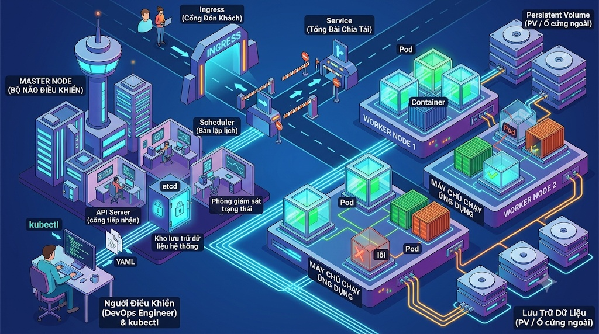
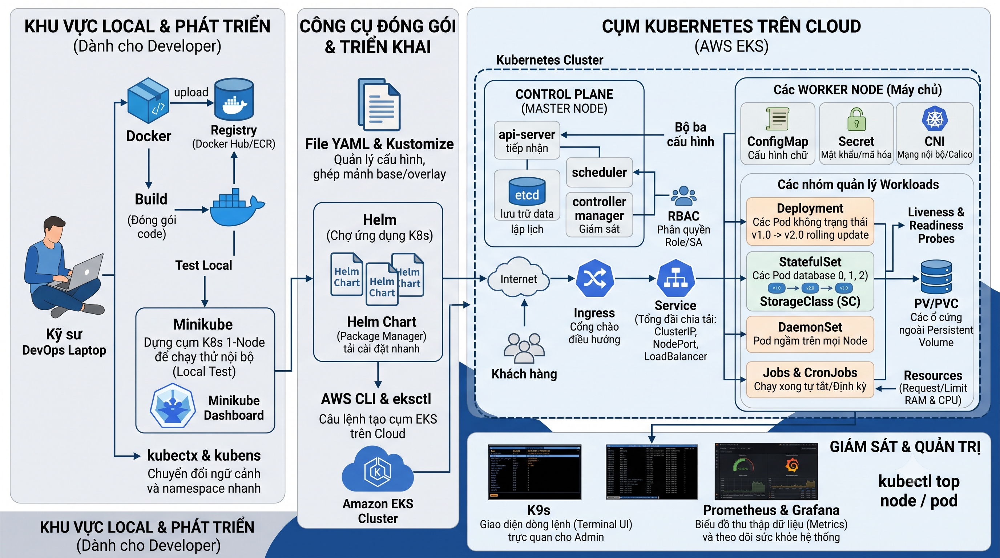

Bức Tranh Tổng Thể Kubernetes
Trước khi đi sâu vào các câu lệnh, hãy nhìn vào bức tranh kiến trúc tổng thể của một cụm Kubernetes (Cluster). Nó hoạt động giống như một thành phố thu nhỏ với bộ phận điều hành (Master Node) và các công xưởng sản xuất (Worker Nodes).

🗺️ Kiến Trúc Toàn Cảnh (Từ Local đến Cloud)
Dưới đây là sơ đồ khối bao quát trọn vẹn mọi ngõ ngách trong hệ sinh thái Kubernetes, từ lúc lập trình viên đóng gói ứng dụng trên máy tính cá nhân cho đến khi vận hành trên Cloud (AWS EKS) và hệ thống giám sát.

1. Khu Vực Local & Phát Triển
Nơi bạn đóng gói code (Docker), chạy thử nghiệm nội bộ (Minikube) và sử dụng các công cụ tối ưu hóa tốc độ làm việc hàng ngày (kubectx & kubens).
2. Công Cụ Đóng Gói & Triển Khai
Nơi "nhào nặn" các file cấu hình phức tạp (YAML & Kustomize), đóng gói ứng dụng quy mô lớn (Helm Chart), và sử dụng câu lệnh để chuyển tiếp, tự động dựng hệ thống lên Cloud (AWS CLI & eksctl).
3. Cụm K8s trên Cloud (AWS EKS)
Nơi chứa toàn bộ "bộ não" Control Plane (Master Node) và hệ thống các máy chủ Worker Node. Tại đây, bạn sẽ quản lý sự phân cấp của từng loại quân đoàn (Deployment, StatefulSet, DaemonSet, Job) kết nối với hệ thống Mạng lưới (Service, Ingress), phân quyền, và Ổ cứng lưu trữ (PV/PVC).
4. Giám Sát & Quản Trị
Các "vũ khí" quan sát, quản lý tối cao dành cho admin như K9s (giao diện terminal UI), Prometheus & Grafana (thu thập và vẽ biểu đồ đo lường), và các lệnh kiểm tra hiệu năng hệ thống trực tiếp (kubectl top).
Lệnh Cơ Bản (Biết bơi)
# Nhóm 1: "Khám bệnh" và Tương tác Pod
kubectl get nodes
Copy
kubectl get pods [-o wide]
Copy
-o wide để xem Pod nằm ở Node nào và có IP là gì.kubectl describe pod <tên-pod>
Copy
kubectl logs <tên-pod>
Copy
kubectl exec -it <tên-pod> -- /bin/sh
Copy
# Nhóm 2: Triển khai bằng YAML (Declarative)
kubectl apply -f <file.yaml>
kubectl delete -f <file.yaml>
# Nhóm 3: Quản lý Phiên bản (Deployment)
kubectl get deploy
Liệt kê Deployment, xem số lượng Pod Desired vs Ready.
kubectl set image deploy/<name> <container>=<img:v2>
Ép cập nhật ứng dụng lên phiên bản mới.
kubectl rollout status deploy/<name>
Xem tiến trình cập nhật cuốn chiếu (Rolling update).
kubectl rollout undo deploy/<name>
Lệnh cứu mạng! Rollback về bản cũ nếu lỗi.
# Nhóm 4: Mạng lưới (Service)
kubectl get svc- Xem danh sách Service (IP, Port).kubectl describe svc <name>- K.tra Endpoints.kubectl port-forward svc/<n> 8080:80- Mở đường hầm test nội bộ ra localhost.
# Nhóm 5: Môi trường (Namespace)
kubectl get ns- Danh sách môi trường.kubectl get all -n <ns>- Xem tất cả trong 1 NS.kubectl get cm- Xem ConfigMaps (Cấu hình).kubectl get secret- Xem Mật khẩu/Token.
Bí kíp học nhanh
Bạn không cần học thuộc lòng tất cả ngay lập tức. Hãy mở Terminal lên, tự tạo 1 file YAML đơn giản (chạy 1 web Nginx chẳng hạn), dùng lệnh apply -f, sau đó thử get pods, thử xóa pod, thử xem log. Việc "gõ lệnh đến đâu, thấy kết quả đến đó" sẽ giúp bạn nhớ sâu hơn rất nhiều!
Bí Kíp Viết File YAML (Declarative)
Thay vì gõ lệnh trực tiếp, Kubernetes khuyến khích bạn mô tả hệ thống mong muốn bằng file YAML. Mọi file cấu hình tài nguyên trong K8s đều bắt buộc phải có 4 trường cơ bản:
1. apiVersion & kind
Định nghĩa phiên bản API và loại tài nguyên bạn muốn tạo (Pod, Deployment, Service, ConfigMap...).
2. metadata
Thông tin nhận dạng tài nguyên: name (bắt buộc, phải duy nhất), namespace (môi trường), labels (nhãn để phân loại).
3. spec (Specification)
Phần quan trọng nhất! Mô tả trạng thái bạn mong muốn hệ thống phải duy trì: dùng Docker image nào, mở port bao nhiêu, tạo mấy bản sao (replicas), cấp bao nhiêu RAM...
📄 Mẫu YAML cho Deployment (Ứng dụng Web)
apiVersion: apps/v1
kind: Deployment
metadata:
name: nginx-web # Tên của Deployment
labels:
app: my-nginx
spec:
replicas: 3 # Luôn giữ 3 Pod chạy song song
selector:
matchLabels:
app: my-nginx # Tìm và quản lý các Pod có nhãn này
template: # ---- BẮT ĐẦU PHẦN ĐỊNH NGHĨA POD ----
metadata:
labels:
app: my-nginx # Gắn nhãn cho Pod sinh ra
spec:
containers:
- name: nginx-container # Tên container
image: nginx:1.24 # Docker image lấy từ Docker Hub
ports:
- containerPort: 80 # Cổng mà app bên trong container đang lắng nghe📄 Mẫu YAML cho Service (Mở cổng ra ngoài)
apiVersion: v1
kind: Service
metadata:
name: nginx-service
spec:
type: NodePort # Mở một cổng trên máy chủ để ra internet
selector:
app: my-nginx # TRỌNG TÂM: Trỏ Service tới các Pod có nhãn app=my-nginx
ports:
- port: 80 # Cổng của Service (giao tiếp nội bộ K8s)
targetPort: 80 # Trỏ vào cổng 80 của Container
nodePort: 30007 # Cổng mở ra ngoài (từ 30000 - 32767)Lệnh Nâng Cao (Kỹ sư vận hành)
💾 Quản lý Ổ cứng (Storage & Volumes)
Dùng để gắn ổ cứng ngoài vào Pod lưu trữ an toàn (Database).
kubectl get sc- Xem loại ổ cứng hỗ trợ (StorageClass).kubectl get pv- Xem mảnh ổ cứng thực tế.kubectl get pvc- Xem "đơn xin cấp ổ cứng" (Bound/Pending).
🎭 Đội quân Đặc biệt (Workloads)
kubectl get sts- StatefulSet: Dùng riêng cho Database.kubectl get ds- DaemonSet: Mỗi Node 1 Pod (thu thập log).kubectl get cronjob- Chạy task theo lịch trình, xong tự tắt.
⚖️ Lập lịch & Phân quyền (Scheduling & RBAC)
kubectl label nodes <node> env=prod- Dán nhãn máy chủ.kubectl taint nodes <node> key=v:NoSchedule- "Xua đuổi" Pod khỏi máy.kubectl get sa- Tài khoản dịch vụ.kubectl auth can-i create deploy -n dev- K.tra quyền hạn nhanh.
📦 Helm & Metrics (Chợ ứng dụng & Giám sát)
helm search repo <app>- Tìm app trên chợ.helm install <name> <app>- Cài đặt cả cụm ứng dụng.kubectl top nodes- Xem % CPU/RAM của máy chủ.kubectl top pods- Xem chi tiết Pod đang ngốn bao nhiêu tài nguyên.
Toolchain Cốt Lõi (Môi trường)
1. Minikube
Môi trường giả lập K8s trên Laptop cá nhân.
minikube start Khởi động cụm.minikube stop/delete Tắt/Xóa cụm hoàn toàn.minikube dashboard Mở giao diện Web quản lý.2. Docker
Đóng gói mã nguồn thành Image trước khi chạy K8s.
docker build -t img:v1 . Đóng gói code.docker push img:v1 Đẩy lên kho lưu trữ.3. AWS CLI & eksctl
Đưa hệ thống lên môi trường Cloud (AWS).
eksctl create cluster --name <name>
Tự động dựng cụm K8s chuẩn doanh nghiệp (đợi 15p).
aws eks update-kubeconfig --name <name>
Chuyển "vô lăng" kết nối từ Minikube lên Cloud.
Đồ Nghề DevOps (Phần chìm tảng băng)
Lệnh kubectl Chuyên Sâu
kubectl explain pod.spec
📖 Từ điển sống của K8s. In ra tài liệu YAML.kubectl cp <file> <pod>:/path
📁 Copy file từ máy tính thẳng vào trong Pod.kubectl drain <node>
⚠️ Đuổi TẤT CẢ Pod sang máy khác để bảo trì.kubectl patch <type> -p '...'
🩹 Băng bó nhanh, sửa nóng cấu hình.
🚀 K9s (Terminal UI)
Thay vì gõ lệnh mù, K9s cấp giao diện phím tắt trực tiếp trên màn hình đen. Tăng x10 tốc độ làm việc.
🧩 Kustomize
Xếp hình file YAML. Dùng chung 1 base, tự đắp thêm patch riêng cho Dev/Staging/Prod.
🔄 kubectx & kubens
Chuyển đổi nhanh qua lại giữa các Cụm (Clusters) và Môi trường (Namespaces) chỉ với 1 nút bấm.
Lộ trình chốt lại
Docker (Code) 👉 Viết file YAML 👉 Chạy thử trên Minikube 👉
Quản lý bằng Helm/Kustomize 👉 Đưa lên Cloud (AWS/EKS) 👉 Giám sát (Grafana/K9s)
Từ Điển Thuật Ngữ Tiếng "Người"
Khi xem các video hướng dẫn, bạn sẽ liên tục gặp các từ khóa tiếng Anh. Dưới đây là giải thích nhanh theo phong cách ví von để bạn hiểu ngay bản chất của chúng.
📦 Pod
Ví von: "Căn hộ chung cư". Nó chứa các Container (những người sống trong đó). K8s không quản lý Container, chỉ quản lý Pod. Nếu Pod sập, mọi thứ bên trong sập theo.
🤖 ReplicaSet
Ví von: "Máy photocopy kiêm Bảo vệ". Nhận lệnh "Giữ cho tôi 3 Pod". Nó liên tục đếm, nếu 1 Pod "chết", nó sẽ "in" ra ngay 1 Pod mới bù vào để luôn đủ số lượng 3.
🚀 Deployment
Ví von: "Quản đốc công trình". Quản lý ReplicaSet. Khi có tính năng mới, nó chỉ huy việc tạo Pod mới, chạy ổn rồi mới xóa Pod cũ (Rolling Update), giúp người dùng không bị rớt mạng.
☎️ Service
Ví von: "Tổng đài viên". IP của Pod thay đổi liên tục khi nó tắt/bật. Service giữ 1 IP cố định. Khi khách gọi Service, nó tự động chuyển máy đến đúng Pod đang sống.
🚪 Ingress
Ví von: "Lễ tân tòa nhà". Nơi tiếp nhận mọi người từ Internet (Domain name, HTTPS). Khách vào hỏi "Tôi muốn xem Video", Ingress chỉ đường sang thang máy (Service) Video.
🗂️ Namespace (NS)
Ví von: "Phân lô đất". Chia 1 cụm K8s vật lý thành nhiều cụm ảo. Ví dụ 1 khu cho đội Dev test, 1 khu cho khách hàng thật (Prod) chạy song song không đụng chạm nhau.
💾 Volume / PV / PVC
Ví von: "Ổ cứng di động (USB)". Pod bị xóa là mất hết dữ liệu. Bạn phải cắm cái USB (Volume) này vào Pod. Dù Pod nổ tung, dữ liệu trong USB vẫn còn đó chờ cắm vào Pod mới.
📝 ConfigMap & Secret
Ví von: "Sổ ghi chú" & "Két sắt". ConfigMap lưu các cấu hình dạng chữ (Màu sắc web, URL liên kết...). Secret cũng y hệt nhưng được mã hóa để lưu Mật khẩu, API key.
📚 StatefulSet
Ví von: "Bản sao có đánh số". Trái với Deployment (Pod nào cũng như nhau). StatefulSet tạo ra các Pod có số thứ tự (0,1,2...) và gắn chặt với ổ cứng riêng. Chuyên dùng cho Database (MySQL, MongoDB).
🕵️ DaemonSet
Ví von: "Điệp viên ngầm". Đảm bảo rằng **bất cứ máy chủ vật lý (Node) nào** trong cụm cũng phải chạy ĐÚNG 1 Pod này. Thường dùng cho các tool thu thập log hệ thống.
⏱️ Job / CronJob
Ví von: "Công nhân thời vụ". K8s bình thường bắt ứng dụng chạy 24/7. Nhưng Job là tạo Pod để làm một việc gì đó (VD: Tính lương tháng), chạy xong thì tự tắt để đỡ tốn điện. CronJob là Job có hẹn giờ.
🛡️ RBAC
Ví von: "Thẻ từ phân quyền". Role-Based Access Control. Là hệ thống chỉ định rõ: Ai (User) được phép làm gì (Xem/Sửa/Xóa) ở khu vực nào (Namespace) trong công trường K8s.